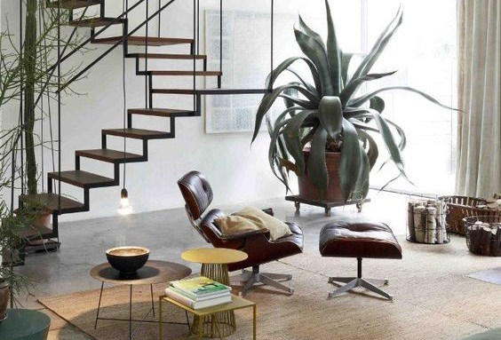

Our top, chilled travel destinations to play card games.
Life on the road can feel like the ultimate freedom. Whether it’s for a few weeks or a few months, there’s no doubt you will experience something outside of the ordinary and be inspired by your journey.
Taking time out from your usual routine means you also have an opportunity to go off-line and off-radar, but actually the truth is sometimes you feel bored. That’s when you know it’s time to grab a buddy, a beer and break out some playing cards.
We never leaves home without a Cool Club deck in our pocket. You never know when you might need them!
Here are our top, chilled travel destinations to play card games.
Pai, Thailand
It’s a long and slightly sticky journey to reach Pai, but the temporary pain is worthwhile.
135km from Chiang Mai, in Northern Thailand, Pai is now an infamous destination for it’s relaxed, uber-chilled vibe and surrounding rice paddy fields.
It’s a magical, mountainous paradise known for it’s nearby gorges, hot springs and almost unimaginably beautiful waterfalls
It is the perfect place to crack a Chang beer and play a few rounds of cards with your travel buddies while the sun sets.
Canggu, Bali
Away from the usual tourist routes, Canggu is a surf and yoga haven with out being sickeningly hippy, like it’s capital Ubud. You can get a great coffee or an juicy burger and deal your Cool Club deck while you wait for the next set to roll in. Gnarly dude.
Everest Base Camp, Tibet
If conditions aren’t right, you’re not climbing. That can lead to many cosy hours in your tent, sleeping off your altitude sickness, playing cards or cuddling Yak.
If you have ambitions to ascend Everest, be ready for road blocks, blizzards and Buddhist temples. You’ll want some way of passing time.
Osa Peninsula, Costa Rica
Do you fantasise about being woken up by howler monkeys and parrots playing in the trees above? The Osa Peninsula could be out of Jurassic Park. it feels so remote and so un-touched it’s almost prehistoric. Here you can get lost in the jungle, go zip-lining or kayak through fertile mangrove forests, but once the sun has set you’ll want some way of entertaining yourself and your crew. Yes, you guessed it – time to grab your Cool Club deck and play some cards.
Saharan Desert, Morocco
When you’re done trekking through the Dunes on Camelback, and are ready to retire to your Bedouin tent for mint tea, you’ll want to stay up after dark to watch the sky become illuminated by a mass of stars. It’s like nothing you’ve ever seen before!!
Here you can break stone-baked flat bread with your nomadic brothers and introduce them to your heroes.
Delhi, India
After several trips through Delhi, we decided that the Indian city has very few redeeming features. It is unbelievably chaotic, crowded and hot and leaves us rocking in a corner, dribbling, and feeling a little cray-cray. It is a necessary challenge to reach India’s riches and passing through can feel like a rite of passage. But, if you want our advice we’d tell you to just hang in your hotel (hiding), reading books and playing card games, until your rickety ride is ready to whisk you away to a better place.
Other Cool Articles
5x fun games to pass the time.

Incredible lyrics everyone should read, from
Tupac and Biggie.

Dutch interior design secrets to make your
space effortlessly cool.
